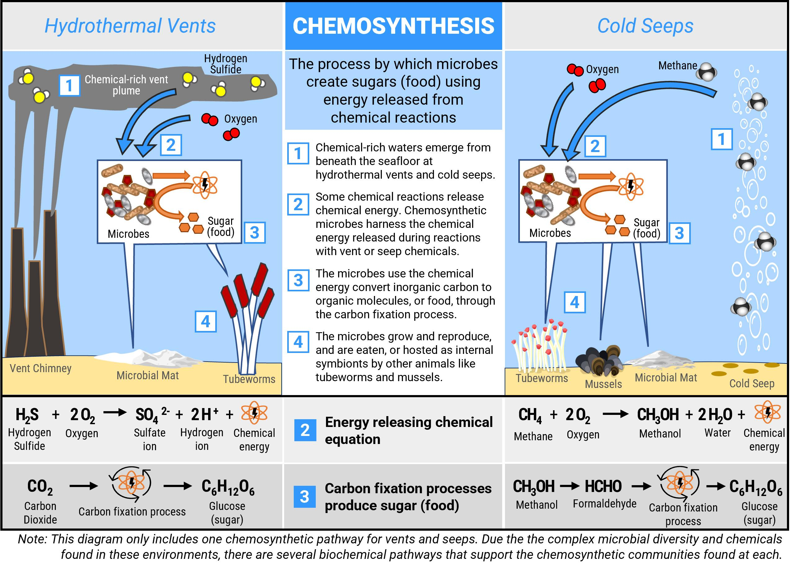
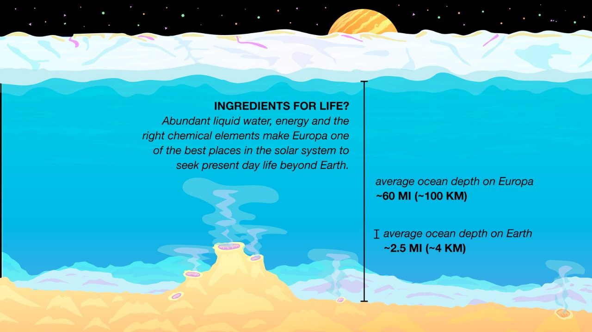
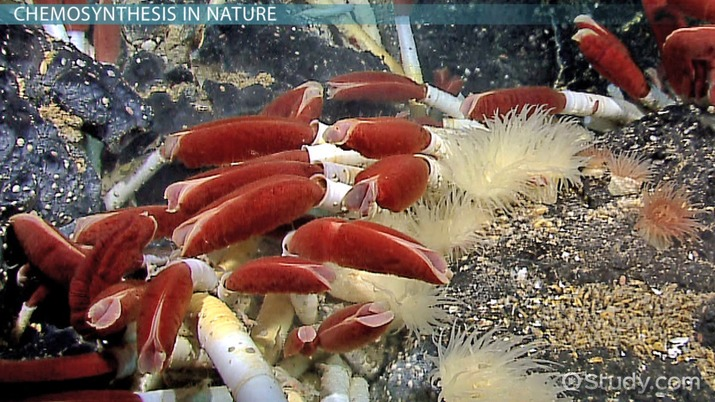

Introduction to Chemosynthesis

Chemosynthesis

Hydrothermal vents
Hydrothermal vents are fissures on the seabed from which geothermally heated water discharges. They are commonly found near volcanically active places, areas where tectonic plates are moving apart at mid-ocean ridges, ocean basins, and hotspots.[1] The dispersal of hydrothermal fluids throughout the global ocean at active vent sites creates hydrothermal plumes. Hydrothermal deposits are rocks and mineral ore deposits formed by the action of hydrothermal vents.

Riftia tubeworm
Riftia pachyptila, commonly known as the giant tube worm and less commonly known as the giant beardworm, is a marine invertebrate in the phylum Annelida related to tube worms commonly found in the intertidal and pelagic zones.